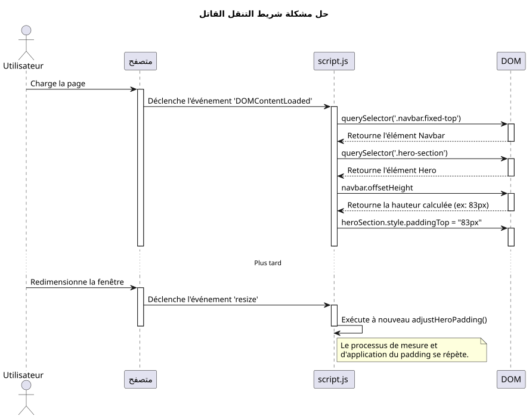
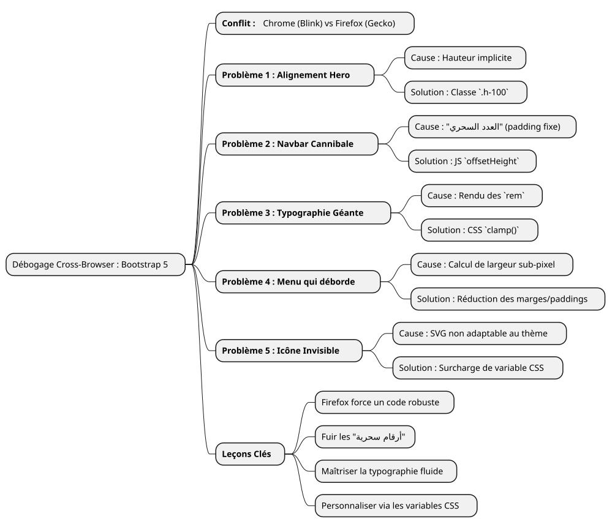

قصة تصحيح أخطاء: التحكم في نزوات فايرفوكس باستخدام Bootstrap 5
Publié le 14 July 2025
|
وقت القراءة : حوالي 7 دقائق المستوى : متوسط |
في هذا دراسة حالة مفصلة، سنقوم بتحليل مشاكل توافق المتصفح الأكثر شيوعًا وأحيانًا الأكثر إحباطًا التي تواجهها عند إنشاء تصميم واجهة مستخدم باستخدام Bootstrap 5.2. من إدارة Flexbox إلى دقة العرض للخطوط، اكتشف مسارنا في التصحيح لتحويل تصميم غير مستقر تحت Firefox إلى تجربة Pixel-Perfect على جميع المتصفحات.
ميدان المعركة: نموذج، ثلاثة متصفحات، عروض متعددة
كل مطور الواجهة الأمامية يعرف هذا الشعور. بعد ساعات من العمل، أصبح التصميم أخيرًا مثاليًا. المحاذاة واضحة، والطباعة أنيقة، والرسوم المتحركة سلسة. نتنفس الصعداء من الرضا، ونعجب بعملنا على كروم (أو برايف، أو إيدج)، ثم، من باب الاحتياط، نفتح المشروع على فايرفوكس. وهنا، يحدث الدراما. عناصر تتدفق، ومحاذاة مكسورة، وخطوط بأحجام غير منسقة… اختفى التناغم الجميل.
هذا هو بالضبط السيناريو الذي واجهناه أثناء تطوير واجهة محفظة جديدة. كانت المتطلبات بسيطة: صفحة ترحيب حديثة، متجاوبة، مع określ ثيمات (فاتح، غامق، وتباين عالٍ)، باستخدام vanilla JavaScript وآخر نسخة من Bootstrap 5.2.
هذا المقال ليس قائمة حلول معجزة. إنه دفتر ملاحظات جلسة التصحيح الخاصة بنا، غوصًا في "لماذا" اختلافات العرض بين محركات Blink (Chromium, Brave) وGecko (Firefox)، وإثبات أن الحلول القوية والحديثة دائمًا أفضل من اللصقات السريعة.
المشكلة 1: البطاقة الطائرة في قسم "Hero
كان أول خطأ أيضًا هو الأكثر وضوحًا. القسم الترحيبي ("hero") يتكون من عمودين: على اليسار العنوان الرئيسي؛ وعلى اليمين بطاقة تعريف.
-
العَرَض :على كروم وبريف، كانت العمودان متعامدين تمامًا عموديًا. على فايرفوكس، انحدرت البطاقة اليمنى بشكل غير مفسر أسفل النص الأيسر.
-
التحقيق :يظهر أن كود HTML كان بسيطًا وصحيحًا، مستخدمًا الفئات القياسية لـ Bootstrap.
<section id="home" class="hero-section">
<div class="container">
<!-- Cette ligne est la clé du problème -->
<div class="row align-items-center min-vh-100">
<div class="col-lg-6">
<!-- Contenu de gauche -->
</div>
<div class="col-lg-6">
<!-- Carte de droite -->
</div>
</div>
</div>
</section>CSS المخصص لدينا لـ`.hero-section`كان يحدد`display: flex` et align-items: center, والصف`min-vh-100`كان يعطي ارتفاعًا أدنى للسطر (div.row) فلماذا كان Firefox يرفض توسيط الأعمدة؟
-
السبب الجذري:هذا مثال نموذجي حول طريقة تفسير محركات العرض للارتفاعات الضمنية. لا`<section>`كان لديها`min-height`, لكن لا`height`صريحة. لتطبيق`align-items-center`داخل`div.row`, فايرفوكس يحتاج إلى معرفة الارتفاع المرجعي لهذا الحاوية. كما أن والداه (
div.containeret la `<section>`هي نفسها) لم تكن لها أي ارتفاعصارمة, كان فايرفوكس ضائعًا. محرك بلينك، الأكثر تساهلاً، يتمكن من “deviner” النية وتوسيط العناصر. جيكو، الأكثر وفاءً للمواصفات، لا يفعل ذلك. -
الحل :اجعل الارتفاع صريحًا. لقد أجبرنا`.container` et le `.row`لإشغال 100% من ارتفاع العنصر الأصل المقابل باستخدام فئة الأداة`h-100`بوتستراب.
<section id="home" class="hero-section">
<div class="container h-100">
<div class="row align-items-center min-vh-100 h-100">
<!-- ... -->
</div>
</div>
</section>|
عندما`align-items`Flexbox لا يعمل كما هو متوقع على المحور العمودي، تأكد دائمًا أن الحاوية لها ارتفاع`height` ou |
المشكلة 2: شريط التنقل الآكلة
-
بعد محاذاة القسم "Hero"، ظهر مشكلة أخرى: شريط التنقل، مع صفّه`fixed-top`, كان يتداخل مع العنوان. واحد`padding-top: 80px`كان قد تم تطبيقه على قسم "Hero" كحل.
-
العَرَض : Le `padding`كان كافيًا على Chrome، لكنه لم يكن كافيًا على Firefox، حيث كان العنوان دائمًا جزئيًا مخفيًا.
-
السبب الجذري :استخدام 'عدد سحري' (
80px) هو ممارسة سيئة جداً. يمكن أن يختلف ارتفاع عنصر مثل شريط التنقل ببضعة بكسل من متصفح إلى آخر بسبب اختلافات طفيفة في عرض الخطوط أو المسافات أو حتى خيارات المستخدم. الاعتماد على قيمة ثابتة هو وصفة لتصميم هش. -
الحل :حل ديناميكي ولا يخطئ في JavaScript. كتبنا نصًا صغيرًا لـ :
-
قياس الارتفاع الحقيقي لشريط التنقل بعد عرض الصفحة
-
اطبق هذا الارتفاع المقاس كـ`padding-top`في القسم "Hero
-
إعادة تنفيذ هذه الوظيفة كلما تم تغيير حجم النافذة لتكييفها مع التغيّرات (مثل الانتقال إلى قائمة الهامبرغر).
-
document.addEventListener('DOMContentLoaded', function() {
function adjustHeroPadding() {
const navbar = document.querySelector('.navbar.fixed-top');
const heroSection = document.querySelector('.hero-section');
if (navbar && heroSection) {
const navbarHeight = navbar.offsetHeight;
heroSection.style.paddingTop = navbarHeight + 'px';
}
}
// Ajuster au chargement et au redimensionnement
adjustHeroPadding();
window.addEventListener('resize', adjustHeroPadding);
});
بالطبع، وفي نفس الوقت، حذفنا القاعدة`padding-top: 80px;`من ملفنا`styles.css`.
المشكلة 3: الطباعة الفوضوية
-
العرض :على فايرفوكس، كان خط العنوان «مطوّر مدرب…» هائلًا تقريبًا صادمًا، بينما كان متناغمًا على المتصفحات الأخرى.
-
السبب العميق :العنوان كان يستخدم فئة`display-4`Bootstrap. هذه الفئات تستخدم أحجام خط استجابة، غالبًا ما تكون مبنية على الوحدة`rem`واستعلامات الوسائط. مرة أخرى، أدى خوارزمية عرض فايرفوكس، المدمجة مع خط "Inter"، إلى حساب حجم أكبر بكثير على دقة لدينا 1920x1080.
-
الحل:استعادة السيطرة باستخدام وظيفة CSS`clamp()
. هذه الوظيفة هي ثورة في الطباعة السائلة. تسمح بتعيين حجم خط بثلاثة قيم: حجم أدنى، حجم \"مفضل\" (الذي يتكيف مع عرض النافذة,`vw), وحجم أقصى.
.hero-content h1 {
color: var(--text-primary);
line-height: 1.2;
/*
Min: 2rem
Préférée: s'adapte à la vue
Max: 2.5rem (40px)
*/
font-size: clamp(2rem, 1.2rem + 1.5vw, 2.5rem);
}مع`clamp(), نحن تمكنا من أن نقول للمتصفح: \"اجعل الخط يزداد مع الشاشة، لكن لا تتجاوز*لا أبدا*الحدّ`2.5rem. هذا قد أدى إلى تنسيق العرض فورًا على جميع المتصفحات، مما يمنحنا تحكمًا مطلقًا في المظهر النهائي.
المشكلة 4: شريط التنقل الذي يفيض
-
العَرَض:على شاشة 1920x1080، تم دفع آخر روابط القائمة ("Blog"، "Contact") خارج الشاشة إلى اليمين، لكن ذلك كان يحدث فقط على فايرفوكس.
-
السبب الجذري :بعد عدة محاولات فاشلة (تغيير نقاط الفصل في Bootstrap من`lg` à
xl`ثم`xxl)، فهمنا. السبب لم يكن منطق Bootstrap، بل مجرد حساب للعرض. على فايرفوكس، مجموع عرض جميع الروابط، بما في ذلك`padding` et `margin`بالقرب من البكسل الفرعي، كانت قليلاً أعلى من 1920 بكسل. على كروم، كان هذا المجموع نفسه قليلاً أقل. كنا نفتقر إلى بعض البكسل. -
الحل :تخفيض جراحي للمسافات. وبما أنه كان غير ممكن استهداف Firefox تحديدًا باستخدام "اختراقات" CSS قديمة، فإن الحل النظيف الوحيد كان العثور على نمط مشترك يعمل في كل مكان. لذا قمنا بتقليل بسيط للهوامش والتباعد الأفقي لكل رابط تنقل.
/* La version finale, légèrement plus compacte */
.navbar-nav .nav-link {
font-size: 0.9rem; /* 90% de la taille de base */
color: var(--text-primary) !important;
font-weight: 500;
margin: 0 0.2rem;
padding: 0.5rem 0.5rem !important;
border-radius: 0.375rem;
transition: all 0.3s ease;
}هذا التخفيض، غير مرئي تقريبًا بالعين المجردة على عنصر واحد، مكّننا جماعيًا من كسب المساحة اللازمة بحيث يندمج جميع الروابط داخل الإطار على فايرفوكس، مع الحفاظ على مظهر شبه المتطابق على المتصفحات الأخرى.
المشكلة 5: القائمة الهامبرغر غير المرئية
-
العَرَض :في وضع الاستجابة (قائمة الهمبرغر)، كان رمز القائمة غير مرئي على السمة "dark" و"high-contrast".
-
السبب الجذري :أيقونة قائمة Bootstrap 5 هي`background-image`(SVG مشفر كعنوان URL). افتراضيًا، لون خطه داكن، مُحسّن لخلفية فاتحة. لا تتكيف تلقائيًا مع تغيير السمة.
-
الحل :استخدم متغيرات CSS الخاصة بـ Bootstrap لتجاوز الأيقونة. لقد حددنا أيقونة SVG جديدة، لكن هذه المرة مع خط أبيض.
#ffffff), ونطبقناها خصيصًا عندما تكون الموضوعات`dark` ou `high-contrast`هم نشطون.
/* ======================
Fix pour l'icône du menu Burger (Blanc)
====================== */
[data-bs-theme="dark"] .navbar-toggler-icon,
[data-bs-theme="high-contrast"] .navbar-toggler-icon {
--bs-navbar-toggler-icon-bg: url("data:image/svg+xml,%3csvg xmlns='http://www.w3.org/2000/svg' viewBox='0 0 30 30'%3e%3cpath stroke='%23ffffff' stroke-linecap='round' stroke-miterlimit='10' stroke-width='2' d='M4 7h22M4 15h22M4 23h22'/%3e%3c/svg%3e");
}|
تخصيص مكونات Bootstrap مثل هذا يتم بشكل متزايد عبر تجاوز متغيرات CSS ( |
الخلاصة: دروس من تصحيح الأخطاء الجاد
هذا المسار، على الرغم من أنه أحيانًا محبط، غني بالتحصيل. كل مشكلة يتم حلها تعزز حقيقة أساسية لتطوير الويب :لا شيء يحل محل اختبار متعدد المتصفحات الصارم.

-
فيرفوكس هو حليف :أعلى درجة من الوفاء بمعايير CSS تجبرنا على كتابة كود أكثر متانة وأقل غموضًا
-
ابتعد عن الأرقام السحرية :القيم الثابتة (مثل`padding-top: 80px`) هي قنابل موقوتة. يفضَل دائمًا الحلول الديناميكية (JavaScript) أو النسبية (Flexbox, Grid).
-
تحكم في طباعتك :استخدم`clamp()`لتحكم كامل في حجم الخطوط المتجاوبة
-
فكّر في «المكونات»:لتخصيص Bootstrap، استبدل متغيراته في CSS بدلاً من إضافة قواعد متعددة تتجاوز الإطار.
-
لا تستهدف متصفحًا :الحل ليس تقريبًا أبدًا أن يتم عمل « hack » لمتصفح محدد، بل إيجاد أسلوب مشترك يعمل في كل مكان.
في النهاية، أصبحت النموذج الآن قويًا، متوقعًا، ومُستعدًا للاندماج في نظام القوالب. كل عطل تم إصلاحه لم يكن فشلًا، بل خطوة نحو كود ذات جودة أعلى.